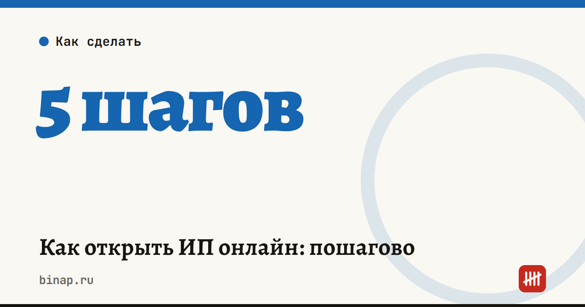

Как открыть ИП онлайн: пошагово

Открыть ИП можно не выходя из дома, за три рабочих дня и без госпошлины, если подать заявление в электронном виде. Главное — решить вопрос с налоговым режимом до подачи: от него зависят налоги на весь год.
Коротко
- Подать заявление можно через Госуслуги, сайт ФНС или банк. При электронной подаче госпошлину не платят.
- Срок регистрации — три рабочих дня, лист записи ЕГРИП приходит на почту.
- Режим выбирайте заранее: уведомление об УСН можно подать вместе с заявлением или в течение 30 дней после регистрации, иначе до конца года окажетесь на общей системе с НДС.
- Расчётный счёт ИП закон не требует, но без него сложнее работать с компаниями и маркетплейсами.
Сроки, изменения и разборы для ИП и самозанятых — каждое утро в Telegram и MAX. Подпишитесь, чтобы не пропустить.
Пошагово
- Выберите коды ОКВЭД — виды деятельности. Основной один, дополнительных можно несколько. Добавить коды позже тоже можно, но для патента и некоторых льгот важно, чтобы нужный вид был указан.
- Решите, какой налоговый режим: самозанятость (НПД), УСН, патент или АУСН, если она есть в вашем регионе. Как сравнить, — в статье «доходы» или «доходы минус расходы» и в калькуляторе УСН.
- Подайте заявление через Госуслуги, сайт ФНС или банк. Понадобится электронная подпись или подтверждённая учётная запись Госуслуг — зависит от способа. Многие банки регистрируют ИП бесплатно и сразу открывают счёт.
- Подайте уведомление об УСН, если выбрали упрощёнку, — вместе с заявлением или в течение 30 дней.
- Получите лист записи ЕГРИП — через три рабочих дня он придёт на почту.
- Откройте расчётный счёт и при необходимости подключите онлайн-кассу и эквайринг. Как выбрать банк по своим оборотам, — в статье где открыть счёт ИП.
Открыть ИП и счёт через банк — ссылка.
Сколько это стоит
| Расход | Сумма |
|---|---|
| Госпошлина при электронной подаче | 0 ₽ |
| Регистрация через банк | обычно бесплатно |
| Фиксированные взносы ИП за себя | 57 390 ₽ за 2026 год, пропорционально месяцам с даты регистрации |
| Расчётный счёт и касса | по тарифам банка и оператора |
Сколько взносов придётся заплатить в первый год с учётом даты регистрации, — в калькуляторе взносов ИП.
Главные ошибки новичков
- Не подали уведомление об УСН в течение 30 дней и оказались на общей системе с НДС.
- Не указали нужный ОКВЭД — а потом не смогли получить патент или льготу.
- Забыли про фиксированные взносы: их платят, даже если дохода не было.
- Смешивают личные деньги и деньги бизнеса на одной карте.
Частые вопросы
Можно ли быть самозанятым без ИП? Да. Самозанятость оформляется в приложении «Мой налог» без регистрации ИП — подробнее в статье как стать самозанятым.
Можно ли открыть ИП, если я работаю по трудовому договору? Да, работа по найму этому не мешает. Взносы за себя ИП платит отдельно от взносов работодателя.
Что если пропустил 30 дней на уведомление об УСН? До конца года останетесь на общей системе. Перейти на УСН можно будет с 1 января, подав уведомление до 31 декабря.